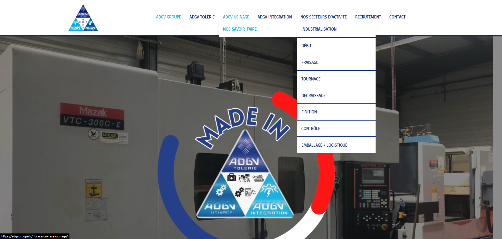

À propos de moi
üöÄ Projets r√©cents
Un aperçu de quelques outils et sites que j'ai développés.

Gestions des disponibilités
Application interne pour gérer les disponibilités du personnel et affectations.

Portfolio personnel
Site responsive développé en HTML/CSS/JS avec animations et thème sombre. Version papier et web du CV.
×

❮
❯
Expérience Professionnelle
Informaticien : ADGVTOLERIE Durtal (49430)
De Mars 2023 à ...
- Maintenance et administration des serveurs, gestion des sauvegardes et de la sécurité
- Programmation de machines intégrées (Photomaton)
- Installation et configuration de postes de travail
- Création du site internet de l'enteprise et maintenance de ce dernier
- Création d'un systéme de ticket de maintenance en python
Conseiller du numérique : Pôle Emploi La Flèche (72200)
D'Avril 2022 à Décembre 2022
- Accueillir les personnes et les renseigner
- Animer et adapter des ateliers sur le numérique
- Accompagner et conseiller des personnes en difficulté
Compétences informatique
HTML
CSS
Wordpress
Python
JavaScript
C++
C#
Compétences globales
Coordonnées
Téléphone: 07 50 35 62 18
Email: gaetanprezelin@icloud.com
Adresse: 30 rue Saint Jean, La Chapelle-d'Aligné
Site web: www.igetsolution.tk
Formation Professionnelle
Diplôme national du brevet - Collège Le Vieux Chêne (72200),
Bac Professionnel Technicien d'usinage - Lycée Polyvalent d'Estournelles de Constant(72200)